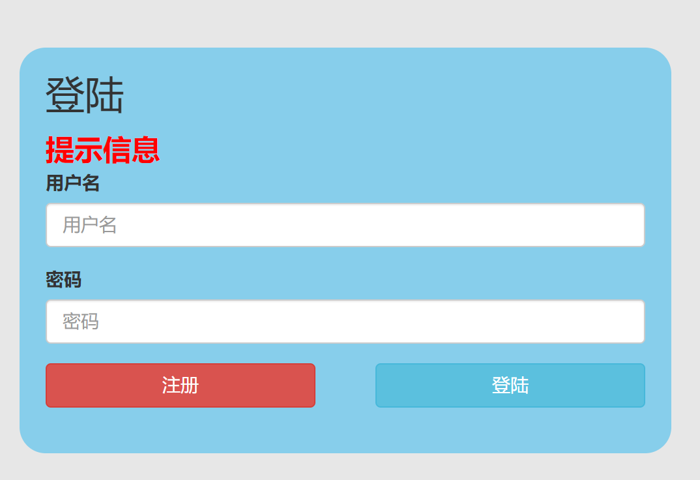
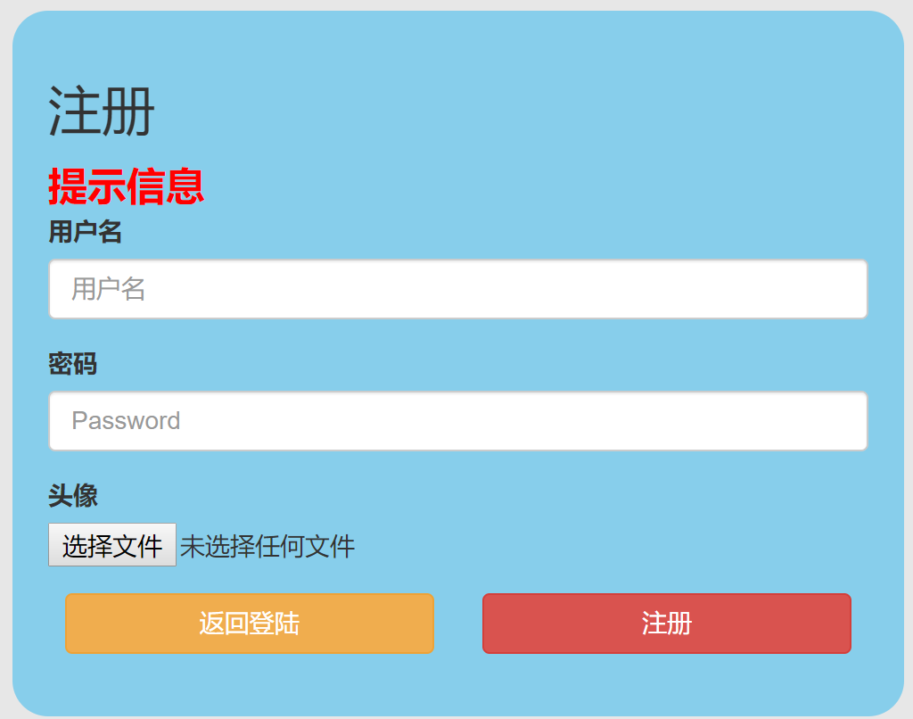
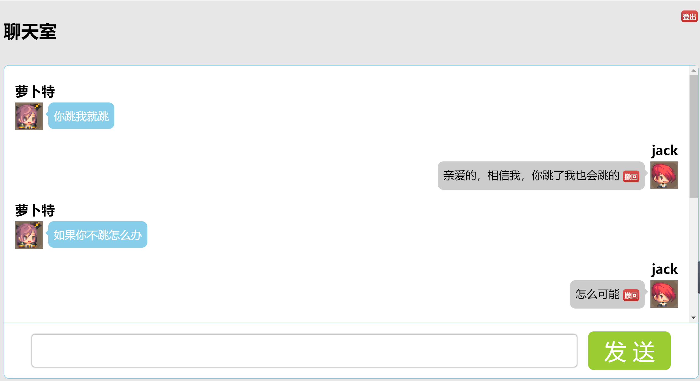
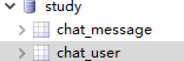
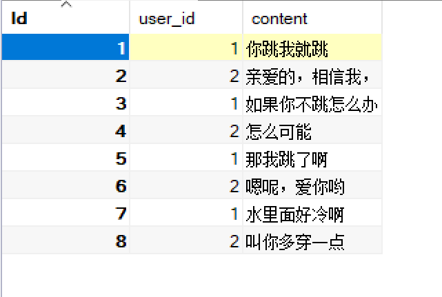
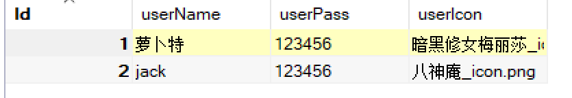

typora-root-url: media
typora-copy-images-to: media
聊天室案例
需求介绍
界面分析：
主要三大界面：登录、注册、聊天主界面
具体如下三图所示：



业务说明：
用户在进入到聊天室（即主界面）之前，必须先登录，登录成功，才能进聊天室聊天。如果还没有账号的，可以在登录页面点击注册，先注册个账号再登录。
数据库说明：

本次，我们使用study这个数据库，可以看到这个库下有两张表分别是chat_message和chat_user
chat_message表的演示数据如下图

可以发现，chat_message这张表保存的是所有聊天时所发的消息
再看chat_user的演示数据，如下图

可以发现，chat_message这张表保存的是所有注册的用户账号和密码以及头像路径
登录功能
主界面搭建
新建index.php页面，作为聊天的主界面，代码如下：
<!DOCTYPE html>
<html lang="zh">
<?php
//连接数据库
$link = mysqli_connect('127.0.0.1','root','root','study');
// 查询数据
$sql = "
select
chat_message.content,
chat_message.user_id,
chat_user.userName,
chat_user.userIcon
from chat_message
inner join chat_user
on chat_message.user_id =chat_user.id;
";
//执行查询
$result = mysqli_query($link,$sql);
//获得数据
$data = mysqli_fetch_all($result,1);
?>
<head>
<meta charset="UTF-8">
<title>Document</title>
<style>
html,
body {
height: 100%;
box-sizing: border-box;
}
body {
padding: 10px;
margin: 0;
/* padding: 20px; */
background-color: #e7e7e7;
display: flex;
flex-direction: column;
}
.clearfix::before,
.clearfix::after {
content: '';
visibility: hidden;
clear: both;
line-height: 0;
height: 0;
display: block;
}
.clearfix {
zoom: 1;
}
.f_l {
float: left;
}
.f_r {
float: right;
}
.container {
margin: 20px auto 0;
width: 100%;
min-width: 600px;
flex: 1;
display: flex;
flex-direction: column;
background-color: white;
border: 1px solid skyblue;
border-radius: 10px;
}
.message {
border-bottom: 1px solid skyblue;
/* height: 400px; */
flex: 1;
overflow-y: scroll;
padding: 20px;
box-sizing: border-box;
transition: all 2s;
}
.control {
height: 100px;
display: flex;
padding-left: 50px;
padding-right: 50px;
}
.inputBox {
height: 60px;
margin-top: 20px;
border-radius: 6px;
outline: none;
padding: 0;
box-sizing: border-box;
/* width: 500px; */
flex: 1;
font-size: 30px;
box-shadow: 0 0 3px gray;
border: 1px solid #ccc;
transition: all .2s;
padding-left: 10px;
}
.inputBox:focus {
border-color: skyblue;
box-shadow: 0 0 3px skyblue;
}
.sendButton {
height: 70px;
margin-top: 15px;
margin-left: 20px;
background-color: yellowgreen;
width: 150px;
border: none;
outline: none;
border-radius: 10px;
color: white;
font-size: 40px;
font-family: '微软雅黑';
cursor: pointer;
}
.message>div>a {
text-decoration: none;
width: 50px;
height: 50px;
border-radius: 50%;
background-color: skyblue;
text-align: center;
line-height: 50px;
color: white;
font-size: 25px;
font-weight: 700;
font-family: '微软雅黑';
}
.message>.left>a {
background-color: hotpink;
}
a>img {
width: 100%;
height: 100%;
}
.message>.right>a {
background-color: yellowgreen;
}
.message>div {
padding: 10px 0;
}
.message>div>p {
max-width: 600px;
min-height: 28px;
margin: 0 10px;
padding: 10px 10px;
background-color: #ccc;
border-radius: 10px;
word-break: break-all;
position: relative;
line-height: 28px;
font-weight: 400;
font-family: '微软雅黑';
color: white;
font-size: 20px;
}
.message>.left>p {
background-color: skyblue;
}
.message>.left>p::before {
content: '';
position: absolute;
border-top: 6px solid transparent;
border-bottom: 6px solid transparent;
border-right: 6px solid skyblue;
left: -5px;
top: 15px;
}
.message>.right>p {
color: black;
}
.message>.right>p::before {
content: '';
position: absolute;
border-top: 6px solid transparent;
border-bottom: 6px solid transparent;
border-left: 6px solid #ccc;
right: -6px;
top: 15px;
}
h2 {
margin: 0;
padding-bottom: 5px;
font-family: '微软雅黑';
}
.right h2 {
text-align: right;
}
.user a {
font-weight: 700;
color: black;
}
.f_r a {
font-size: 12px;
text-decoration: none;
border-radius: 5px;
padding: 3px;
background-image: linear-gradient(to bottom, #d9534f 0, #c12e2a 100%);
color: white;
}
</style>
</head>
<body>
<div class="title">
<h1 class="f_l">聊天室</h1>
<div class="user f_r">
<h2 class="">
</h2>
<!-- <img src="./images/icon/<?php echo $_COOKIE['userIcon']; ?>" alt=""> -->
<a href="#">登出</a>
</div>
</div>
<div class="container">
<div class="message">
<!-- 遍历所有数据 -->
<?php
for($i=0;$i<count($data);$i++):
//先暂时把user_id为2的消息放在右边
if($data[$i]['user_id'] == 2):
?>
<!-- 自己发送的消息在右边 -->
<div class="right clearfix">
<h2>
<?php echo $data[$i]['userName']; ?>
</h2>
<a href="#" class='f_r'>
<img src="./images/icon/<?php echo $data[$i]['userIcon']; ?>" alt="">
</a>
<p class='f_r'>
<?php echo $data[$i]['content']; ?>
<a class="btn btn-default" href="">撤回</a>
</p>
</div>
<?php else: ?>
<!-- 其他人的都在左边 -->
<div class="left clearfix">
<h2>
<?php echo $data[$i]['userName']; ?>
</h2>
<a href="#" class='f_l'>
<img src="./images/icon/<?php echo $data[$i]['userIcon']; ?>" alt="">
</a>
<p class='f_l'>
<?php echo $data[$i]['content']; ?>
</p>
</div>
<?php endif; ?>
<?php endfor; ?>
</div>
<form action="sendMessage.php" method="post">
<div class="control">
<input type="text" name="content" class='inputBox f_l'>
<input type="submit" class='sendButton f_r' value='发 送'>
</div>
</form>
</div>
</body>
</html>
代码说明：
- 所有聊天消息都在